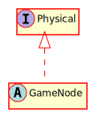

Hierarchy-Diagram
{kind=link}
Legend
 class
class
 abstract class
abstract class
 interface
interface
 public property
public property
 protected property
protected property
 private property
private property
 public method
public method
 protected method
protected method
 private method
private method
Hierarchy
- Physical
Implemented by
Index
Properties
Methods
Properties
_velocity
A vector that allows velocity to be passed to the physics engine
active
Represnts whether this object has active physics or not.
collided
A boolean representing whether or not the node just collided with the tilemap
collider
The offset of the collision shape from the center of the node
collision
The shape of the collider for this physics object.
frozen
Represent whether the object is frozen from moving or not.
group
The physics group this node belongs to
has
A flag for whether or not this object has initialized game physics.
is
Represents whether this object is collidable (solid) or not.
is
is
is
Represents whether this object can move or not.
is
Represnts whether this object is a trigger or not.
moving
Represents whether the object is moving or not.
on
Reprsents whether the object is on the ceiling or not.
on
Represents whether the object is on the ground or not.
on
Reprsents whether the object is on the wall or not.
swept
The rectangle swept by the movement of this object, if dynamic
trigger
Events to trigger for collision enters.
trigger
Events to trigger for collision exits
trigger
The trigger mask for this node
Methods
add
Adds physics to this object
Parameters
Optional collisionShape: Shape
The shape of this collider for this object
Optional colliderOffset: Vec2
Optional isCollidable: boolean
Whether this object will be able to collide with other objects
Optional isStatic: boolean
Whether this object will be static or not
Returns void
disable
Prevents this object from participating in all collisions and triggers. It can still move.
Returns void
enable
Enables this object to participate in collisions and triggers. This is only necessary if disablePhysics was called
Returns void
finish
The move actually done by the physics engine after collision checks are done.
Returns void
get
If used before "move()", it will tell you the velocity of the node after its last movement
Returns Vec2
move
Tells the physics engine to handle a move by this object.
Parameters
velocity: Vec2
The velocity with which to move the object.
Returns void
remove
Removes this object from the physics system
Returns void
set
Sets the physics group of this node
Parameters
group: string
The name of the group
Returns void
set
Sets this object to be a trigger for a specific group
Parameters
group: string
The name of the group that activates the trigger
onEnter: string
The name of the event to send when this trigger is activated
onExit: string
The name of the event to send when this trigger stops being activated
Returns void
Describes an object that can opt into physics.